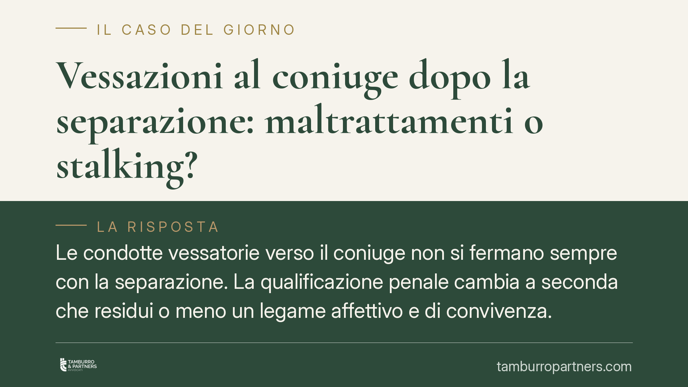

Vessazioni al coniuge dopo la separazione: maltrattamenti o stalking?
Le condotte vessatorie verso il coniuge non si fermano sempre con la separazione. La qualificazione penale cambia a seconda che residui o meno un legame affettivo e di convivenza. La distinzione tra maltrattamenti e atti persecutori incide su pena, procedibilità e possibilità di ritirare la querela. Un tema delicato, spesso intrecciato con il diritto di famiglia.

Il nodo: maltrattamenti o atti persecutori?
Quando le condotte vessatorie di un coniuge proseguono dopo la separazione, si pone un problema di inquadramento penale: si tratta di maltrattamenti in famiglia (art. 572 c.p.) o di atti persecutori, il cosiddetto stalking (art. 612-bis c.p.)?
La distinzione non è teorica. Dalla qualificazione dipendono la cornice sanzionatoria, la procedibilità e la possibilità di ritirare la denuncia.
Inquadramento normativo
Contrariamente a quanto si tende a credere, il discrimine non è lo scioglimento formale del matrimonio. La giurisprudenza consolidata guarda alla sostanza del rapporto: ciò che conta è se permane un vincolo di convivenza o un legame affettivo-solidaristico effettivo tra le parti.
Se, pur dopo la separazione, residua una relazione di questo tipo — ad esempio una convivenza di fatto non interrotta o una continuità di rapporti legata alla gestione dei figli — le condotte abituali possono integrare il reato di maltrattamenti contro familiari e conviventi (art. 572 c.p.), punito con la reclusione da tre a sette anni.
Quando invece la convivenza è cessata e manca ogni legame residuo, le condotte persecutorie rientrano nello stalking. L'art. 612-bis, secondo comma, c.p. prevede un'aggravante specifica proprio quando il fatto è commesso dal coniuge, anche separato o divorziato, o da persona legata alla vittima da relazione affettiva. In altri termini, lo stalking aggravato può configurarsi anche tra coniugi quando non esiste più alcun rapporto solidaristico effettivo.
La violenza assistita
Se le condotte avvengono in presenza di figli minori, trova applicazione l'aggravante della cosiddetta violenza assistita, prevista dall'art. 61 n. 11-quinquies c.p. L'aggravante opera per i delitti contro la vita, l'incolumità individuale, la libertà personale e per i maltrattamenti, quando commessi in presenza o in danno di un minore. L'assistere alla violenza, anche solo come spettatore, è considerato dall'ordinamento un pregiudizio autonomo per il minore.
Implicazioni pratiche
Le conseguenze della diversa qualificazione sono concrete.
Il reato di maltrattamenti presuppone l'abitualità della condotta: non il singolo episodio, ma una pluralità di atti che generano un clima di sopraffazione. È procedibile d'ufficio: non serve la querela e, soprattutto, non è possibile ritirarla per far cadere il procedimento.
Lo stalking, dopo la riforma Cartabia, è procedibile d'ufficio in diverse ipotesi, tra cui i casi aggravati e quelli in cui la persona offesa sia minore o disabile. Dove è prevista la querela, questa è irrevocabile quando i fatti sono commessi con minacce gravi o reiterate. Non va quindi dato per scontato che una denuncia per stalking possa sempre essere ritirata.
Sul piano probatorio, la ricostruzione del rapporto tra le parti — convivenza, frequentazione, gestione dei figli — diventa decisiva per orientare la qualificazione.
Cosa fare in concreto
- Documenta ogni episodio: messaggi, email, referti medici, testimonianze, annotazioni datate.
- Conserva la cronologia dei fatti in ordine temporale, perché l'abitualità della condotta è un elemento centrale.
- Segnala tempestivamente le situazioni che coinvolgono i figli minori: la loro esposizione alla violenza ha rilievo autonomo.
- Verifica la procedibilità del reato prima di valutare qualsiasi scelta sulla querela: nei maltrattamenti la remissione non è possibile.
- È opportuno coordinare la dimensione penale con quella del diritto di famiglia, evitando ricostruzioni dei fatti tra loro incoerenti.
Un chiarimento finale
La separazione non azzera la rilevanza penale delle condotte vessatorie. Cambia, semmai, il nome del reato e il regime che lo accompagna. La linea di confine tra maltrattamenti e stalking passa dalla sostanza del rapporto tra le parti, non da un timbro sullo stato civile.
---
*Contributo informativo a cura di Tamburro & Partners — Avv. Giuseppe Tamburro. Non costituisce parere legale.*
Ogni condominio ha una storia a sé.
Se gestisci un'amministrazione e vuoi un confronto su una specifica questione condominiale, scrivi allo studio. Ti rispondiamo entro un giorno lavorativo.